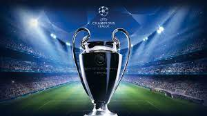
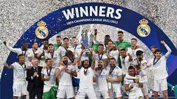

Pagina oficial
Pagina oficial
La Liga de Campeones de la UEFA (en inglés y oficialmente, UEFA Champions League; UCL), conocida en sus orígenes como Copa de Europa, es el torneo internacional oficial de fútbol más prestigioso a nivel de clubes entre los organizados por la Unión de Asociaciones Europeas de Fútbol (UEFA). Asimismo, es el acontecimiento deportivo anual más seguido en el mundo, con más de 350 millones de espectadores en 2018.
Estas son las fechas en las que el Real Madrid gano las Champions: 1955-56
1956-57
1957-58
1958-59
1959-60
1965-66
1997-98
1999-00
2001-02
2013-14
2015-16
2016-17
2017-18
2021-22. El sabado 28/5/2022 el equipo merengue gano su desimocuarta Champions.